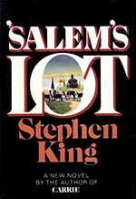
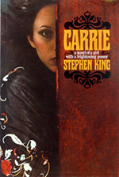
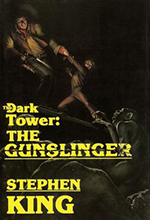
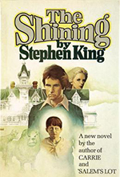

Stephen King
Stephen King was born on September 21, 1947, in Portland, Maine. He graduated from the University of Maine and later worked as a teacher while establishing himself as a writer. Having also published work under the pseudonym Richard Bachman, King's first horror novel, Carrie, was a huge success. Over the years, King has become known for titles that are both commercially successful and sometimes critically acclaimed. His books have sold more than 350 million copies worldwide and been adapted into numerous successful films. King is recognized as one of the most famous and successful horror writers of all time.
For a good portion of his career, King wrote novels and stories at a breakneck speed. He published several books per year for much of the 1980s and '90s. His compelling, thrilling tales have continued to be used as the basis of numerous films for the big and small screens. King continues to create and be involved in provocative projects. He has worked directly in television, writing for series like Kingdom Hospital and Under the Dome, with the latter based on his 2009 novel. In 2011 he published 11/22/63, a novel involving time travel as part of an effort to stop the assassination of President John F. Kennedy. King also wrote Joyland (2013), a pulp-fiction style thriller that takes readers on a journey to uncovering who's behind an unsolved murder. And he surprised audiences by releasing Doctor Sleep (2013), a sequel to The Shining, with Sleep hitting No. 1 on the New York Times bestseller list. [5]
King related in detail his primary inspiration for writing horror fiction in his non-fiction Danse Macabre (1981), in a chapter titled "An Annoying Autobiographical Pause". King compares his uncle's successfully dowsing for water using the bough of an apple branch with the sudden realization of what he wanted to do for a living. That inspiration occurred while browsing through an attic with his elder brother, when King uncovered a paperback version of an H. P. Lovecraft collection of short stories he remembers as The Lurker in the Shadows, that had belonged to his father. King told Barnes and Noble Studios during a 2009 interview, "I knew that I'd found home when I read that book." [6]
Works
-

Salem's Lot
Ben Mears has returned to Jerusalem's Lot in the hopes that living in an old mansion, long the subject of town lore, will help him cast out his own devils and provide inspiration for his new book. But when two young boys venture into the woods and only one comes out alive, Mears begins to realize that there may be something sinister at work and that his hometown is under siege by forces of darkness far beyond his control. [1]
Amazon.com
Stephen King's second book, 'Salem's Lot (1975)--about the slow takeover of an insular hamlet called Jerusalem's Lot by a vampire patterned after Bram Stoker's Dracula--has two elements that he also uses to good effect in later novels: a small American town, usually in Maine, where people are disconnected from each other, quietly nursing their potential for evil; and a mixed bag of rational, goodhearted people, including a writer, who band together to fight that evil.
Simply taken as a contemporary vampire novel, 'Salem's Lot is great fun to read, and has been very influential in the horror genre. But it's also a sly piece of social commentary. As King said in 1983, "In 'Salem's Lot, the thing that really scared me was not vampires, but the town in the daytime, the town that was empty, knowing that there were things in closets, that there were people tucked under beds, under the concrete pilings of all those trailers. And all the time I was writing that, the Watergate hearings were pouring out of the TV.... Howard Baker kept asking, 'What I want to know is, what did you know and when did you know it?' That line haunts me, it stays in my mind.... During that time I was thinking about secrets, things that have been hidden and were being dragged out into the light." Sounds quite a bit like the idea behind his 1998 novel of a Maine hamlet haunted by unsightly secrets, Bag of Bones.Fiona Webster | Amazon.com
Booklist
Before vampires became sympathetic characters with their own alternate worlds, complete with vampire coffee shops and vampire politics, they used to be bad guys, scary not sexy, and they preferred wreaking havoc in horror novels rather than exuding tortured sensitivity in YA coming-of-age fiction. Fortunately, we don’t need to go all the way back to Dracula and Boris Karloff to remember those halcyon days: we have Stephen King’s ’Salem’s Lot, from 1975. Oddly, it’s not the vampires that make ’Salem’s Lot great popular fiction. Mr. Barlow, our lead vampire, is no Dracula. He doesn’t even appear until the story is nearly half over, and he is perhaps the most one-dimensional figure in the book (but that single dimension is enough: unadulterated evil). The real main character isn’t a person at all, human or vampire: it’s the seemingly idyllic New England town of Jerusalem’s Lot. King once said that in ’Salem’s Lot, he set out to create “a fictional town with enough prosaic reality about it to offset the comic-book menace of a bunch of vampires". He did just that by drawing on our universal fear of outsiders, and nowhere is that fear more recognizable than in our traditional image of the New England small town, where insularity itself becomes a defense against incursion by strangers. The stereotypical Yankee, befuddling outsiders with a series of cryptic yups and nopes, may be a comic character from folklore, but he is also a soldier defending his Maginot Line against potential blitzkrieg. And behind the crotchety Yankee’s seeming impregnability, there is the constant fear that one day a stranger will come to town who won’t take nope for an answer.
That juxtaposition of prosaic reality against outlandish terror has always been central to King’s technique for scaring his readers. In ’Salem’s Lot, he does it by looking beneath the surface of idyllic New England. We see the pastoral beauty, the close-knit community, and the unpretentious lifestyle, yet from the beginning, we also see the harbinger of something else, something other. The novel begins with a stranger, not Barlow but a writer, Ben Mears, returning to the Lot, where he’d lived briefly as a boy. Mears has come home again not to reclaim his innocence but to expunge his demons—the memory of the body of a man dead for decades, still hanging in the closet of the Marsten House. Mears believes he hallucinated this horrible scene, but he wants to explore why it happened, why this house prompted him to imagine evil. What Mears finds when he returns to the Lot is that the Marsten House is now occupied by another stranger, our Mr. Barlow. As the known gives way to the unknown, King shows how the small-town insistence on maintaining the illusion of tranquility makes easy pickings for a vampire intent on fomenting a little evil.
If ’Salem’s Lot were just another old-fashioned vampire novel, it would portray a straightforward struggle between good (people) and bad (vampires). It would not portray the arrival of vampires in the Lot as a kind of supernatural manifestation of the town’s distorted sense of itself. King feels both affection for and anger toward his small town. A part of him wants to see ’Salem’s Lot get its comeuppance, and this part gives the novel a degree of frisson that most vampire stories lack. And yet, in the end, the vampires don’t win, at least not exactly. Yes, Ben Mears pounds a stake in Barlow’s heart, but that isn’t enough. The evil continues to thrive. The town needs its own stake. Writers of every kind—from Nathaniel Hawthorne to Grace Metalious to John Updike to Carolyn Chute—have wrestled with their mixed feelings about the small towns of New England. But it took Stephen King to burn one down.Bill Ott | Booklist @ Amazon.com
Matthew Utu
I always had a fear of vampires of a child, this book really fleshed out those thoughts and nightmares throughout the second half of the book. As a big reader of Stephen King I thought that this was one of his better novels if not one of the best. How he goes over each and every character and how the group forms together is fun to read. There is a big twist that might shock some new readers of Stephen King but if you have read any of his books you might have seen this one coming from a mile away. Ben Mears group contains a lot of really interesting characters from a slim schoolkid, to an irish priest. Through the first half of the book it isn’t to interesting but then halfway through the book it picks up the pace a ton and just keeps going faster and faster to a screaming finish by the end of the novel.
Stephen King shows his mastery in horror novels with the way the characters feed off each other (literally) and develop as the story goes on. Ben Mears might not be the greatest of main characters but he works for the book and the surrounding characters more than make up for his downfalls. I would recommend this book to anyone who wants to read a good horror or suspense novel, or if you are just an avid reader of Stephen King. If you are a big Stephen King fan you’ve probably already read it because it is very highly regarded as one of his best works that he has ever written.Matthew Utu | Amazon.com
-

Carrie
Stephen King's legendary debut, about a teenage outcast and the revenge she enacts on her classmates. Carrie White may be picked on by her classmates, but she has a gift. She can move things with her mind. Doors lock. Candles fall. This is her power and her problem. Then, an act of kindness, as spontaneous as the vicious taunts of her classmates, offers Carrie a chance to be a normal...until an unexpected cruelty turns her gift into a weapon of horror and destruction that no one will ever forget. [2]
Amazon.com
Why read Carrie? Stephen King himself has said that he finds his early work "raw," and Brian De Palma's movie was so successful that we feel as if we have read the novel even if we never have. The simple answer is that this is a very scary story, one that works as well, if not better, on the page as it does on the screen. Carrie White, bullied by cruel teenagers at school and her religious nut of a mother at home, gradually discovers that she has telekinetic powers, powers that will eventually be turned on her tormentors. King has a way of getting under the skin of his readers by creating an utterly believable world that throbs with menace before finally exploding. He builds the tension in this early work by piecing together extracts from newspaper reports, journals, and scientific papers, as well as more traditional first- and third-person narrative in order to reveal what lurks beneath the surface of Chamberlain, Maine. Although the supernatural pyrotechnics are handled with King's customary aplomb, it is the carefully drawn portrait of the little horrors of small towns, high schools, and adolescent sexuality that give this novel its power and assures its place in the King canon.Simon Leake | Amazon.com
Kenneth A. McKinley
The first novel by the master of the macabre himself. We've all heard the story of how Carrie almost never saw the light of day until his wife pulled it out of the trash and told her husband that it was good and that he should finish it. Low and behold, a star is born. Carrie is told through a somewhat different kind of format that has been used with varying degrees of success by other authors. King actually lets us know what happens in the end long before the last few pages through "interviews" and testimonials published from the Carrie White hearing papers. Many times this format of storytelling can be chunky and plodding, slowing the story down. This isn't the case in Carrie.
Carrie has many great things going for it and you can't ask for a much better freshman effort. King's description of the over the top prank in the shower scene will evoke memories of being bullied in high school by virtually all the readers. Religion gone wrong in her mother will also leave an unpleasant taste in your mouth. With so many school shootings in the past handful of years, the ending scene makes you cringe. Even though Carrie doesn't have an AK-47, it still leaves you feeling hollow watching innocent high schoolers bite the dust for being at the wrong place and the wrong time. King rides many emotions that drag you kicking and screaming back to your high school days and makes you ask yourself "what if?" and thats where Carrie shines. You'll also see a pattern King uses in his later writings where he compares reading someone's mind to taking books off the shelves of a large library and reading them.Kenneth A. McKinley | Amazon.com
Andy Keith
The book that got Stephen King started, Carrie is a fantastic and compelling story. We can all identify in some degree about fitting in (or not fitting in to society, as this book concentrates on) and i think King does a great job of not only exploring these aspects of human nature, but also exploring the fantastic. I had heard a story once that King in frustration early on in his life had thrown this book away and his wife had fished it out of the trash and sent it in. I don't know if that is true or not, but I'm sure glad that it made it to publication! As with all Stephen King books, this has something for everyone - suspense, thriller, fiction, science fiction, and most definitely horror, King is truly indeed the King of horror.Andy Keith | Amazon.com
-

Dark Tower: The Guslinger
A #1 national bestseller, The Gunslinger introduces readers to one of Stephen King’s most powerful creations, Roland of Gilead: The Last Gunslinger. He is a haunting figure, a loner on a spellbinding journey into good and evil. In his desolate world, which mirrors our own in frightening ways, Roland tracks The Man in Black, encounters an enticing woman named Alice, and begins a friendship with the boy from New York named Jake. Inspired in part by the Robert Browning narrative poem, “Childe Roland to the Dark Tower Came,” The Gunslinger is “a compelling whirlpool of a story that draws one irretrievable to its center” (Milwaukee Sentinel). It is “brilliant and fresh…and will leave you panting for more” (Booklist).[3]
Amazon.com
Thirty-three years, a horrific and life-altering accident, and thousands of desperately rabid fans in the making, Stephen King's quest to complete his magnum opus rivals the quest of Roland and his band of gunslingers who inhabit the Dark Tower series. Loyal DT fans and new readers alike will appreciate this revised edition of The Gunslinger, which breathes new life into Roland of Gilead, and offers readers a "clearer start and slightly easier entry into Roland's world."
King writes both a new introduction and foreword to this revised edition, and the ever-patient, ever-loyal "constant reader" is rewarded with secrets to the series's inception. That a "magic" ream of green paper and a Robert Browning poem, came together to reveal to King his "ka" is no real surprise (this is King after all), but who would have thought that the squinty-eyed trio of Clint Eastwood, Lee Van Cleef, and Eli Wallach would set the author on his true path to the Tower? While King credits Tolkien for inspiring the "quest and magic" that pervades the series, it was Sergio Leone's The Good, the Bad, and the Ugly that helped create the epic proportions and "almost absurdly majestic western backdrop" of Roland's world.
To King, The Gunslinger demanded revision because once the series was complete it became obvious that "the beginning was out of sync with the ending." While the revision adds only 35 pages, Dark Tower purists will notice the changes to Allie's fate and Roland's interaction with Cort, Jake, and the Man in Black--all stellar scenes that will reignite the hunger for the rest of the series. Newcomers will appreciate the details and insight into Roland's life. The revised Roland of Gilead (nee Deschain) is embodied with more humanity--he loves, he pities, he regrets. What DT fans might miss is the same ambiguity and mystery of the original that gave the original its pulpy underground feel (back when King himself awaited word from Roland's world).Daphne Durham | Amazon.com
Library journal
King's fantastical and allegorical "Dark Tower" series commenced in 1982 with the publication of The Gunslinger. Subsequent volumes have appeared about every five years thereafter. The Gunslinger introduces protagonist Roland as he pursues the Man in Black through bleak and tired landscapes in a world that has "moved on." Roland believes that the Man in Black knows and can be made to reveal the secrets of the Dark Tower, which is the ultimate goal of Roland's quest. The Waste Lands sees Roland and his fellow travelers continuing the quest for the Dark Tower. They journey through imaginative landscapes, over astounding obstacles, and meet with and confront a unique and fully drawn cast of characters, both human and nonhuman. Reader Frank Muller gives voice to the characters with a thoroughly engaging precision, accuracy, and great humanity and with an edge that drives the story onward and seems to amplify King's skill as an author. Highly recommended for all fiction collections.Kristen L. Smith | Library Journal @ Amazon.com
Robert Tucker
Doesn't matter if digital or paper, once you open this book you will fall into a "Doorway" that will take you to other doorways you never dreamed existed. Immediately identified with the lead character and the journey that is his obsession to complete. You will want to be with him each step through each door to his final destination! If you are a Western fan you will, or a Stephen King fan, or just need a great escape into the mind of a master story writer, start here...only KA will decide when you leave!!!Robert Tucker | Amazon.com
-

The Shining
Jack Torrance’s new job at the Overlook Hotel is the perfect chance for a fresh start. As the off-season caretaker at the atmospheric old hotel, he’ll have plenty of time to spend reconnecting with his family and working on his writing. But as the harsh winter weather sets in, the idyllic location feels ever more remote . . . and more sinister. And the only one to notice the strange and terrible forces gathering around the Overlook is Danny Torrance, a uniquely gifted five-year-old. [4]
Ksenia Anske
Redrum. It must be one of those words that can send an instant chill along your spine, especially said aloud by a five year old child, first wonderingly, then grimly, and, at last, with an adult understanding. If you think you know darkness, think again. The scariest monsters are not the ones that look ugly and brandish their claws, attempting to make us into a tasty breakfast. The scariest monsters are the ones that live inside us. That part that is capable of hurting people, hurting those we love. This is the real hair-raising stuff, this is the stuff of nightmares. This is what THE SHINING is about, about facing a deeply rooted horror of ourselves, of what we are capable, in the creepiest corners of our soul. Where does it come from? What does it feed on? How does one understand it? How does one get rid of it? Is it possible to get rid of it? Perhaps is has to be there, always, to counterbalance our other side, our loving side, the one that we are proud of and like to parade to family and friends, like to look upon in the mirror? Can one answer these questions? Stephen King tried, and I admire him for it. THE SHINING only looks like a horror story on the surface, but it's a story about pain we all go through, a story about search and doubt, and, ultimately, a story about yearning for love. What else can I say? It's brilliant. Simply brilliant. I will probably reread this book many times, to pick up on a new nuance or story layer each time I dip my head into the horror of THE SHINING.Ksenia Anske | Amazon.com
Brent McGregor
“The Shining,” Stephen King’s third published novel (1977), continues to shine-on as the benchmark for the horror genre, and as a literary masterpiece of the 20th century. The book follows, Jack Torrance, as he takes on the position as winter caretaker for the Overlook Hotel. Jack is accompanied by his family and in particular his son, Danny, who has psychic abilities which are referred to as “the shining.” With Danny’s, shining working in spooky overtime, it soon becomes apparent that malevolent and supernatural forces are at work in the hotel. The location for the story (the hotel) comes to personify evil by taking on human-like qualities, which is a trait of the modern gothic novel. King is known for his multi-dimensional characters, and as a reader, you can’t help but empathise with the Torrance family. Jack’s backstory and his struggles with alcoholism play a pivotal part in his steady descent into madness.
A number of clever literary devices are employed to intensify emotion; such as the metaphoric “boiler” in the basement (building pressure), and the “howling wind and snow” from outside the hotel. King is also the master of foreshadowing; who will ever forget “Redrum” planted into the story like some hidden gem. Some of the scenes are just unforgettable too, like the ‘animal topiary;’ and you might develop a phobia of bathrooms after reading the “room 217” scene. I enjoyed this book not only because it is a ripping good yarn but also because of the perfect symmetry of its story structure. King is to be admired for his story telling prowess and the intricate way in which he deftly interweaves both characters and sub-plots into a rich tapestry.Brent McGregor | Amazon.com
Amazon.com
The Shining is one of the best horror stories that I have ever read. It is Stephen King at his finest. I read this book about 25 years ago and it terrified me, and of course I have also seen the movie with Jack Nicholson a bunch of times over the years since reading the book. When I found out that Stephen King was publishing a sequel to The Shining this year, I wanted to prepare, so I dove back into re-reading The Shining and found that there was much that I did not recall about the book's intricacies regarding plot and characters, and tons of things that were very different from the movie, which had become ingrained into my mind as the mainstay over the years. To be honest, re-reading The Shining terrified me all over again in 2016 and it was so awesome – I experienced a truly freaked-out, page turning, frightened, jumping-at-shadows-late-at-night-in-my-own home horror-lover's bliss! I am still trying to pinpoint which characters and moments in the book scared me the most and I can't do it because there were so many. What a ride! I can honestly attest to the old cliché that the book is way better than the movie. If you've never read The Shining, you are in for a real treat. If you are considering re-reading The Shining, please do so, by all means, I promise you will not be disappointed!John Paul's Mom | Amazon.com
- [1] https://www.amazon.com/Salems-Lot-Stephen-King/dp/0307743675
- [2] https://www.amazon.com/Carrie-Stephen-King/dp/0307743667
- [3] https://www.amazon.com/Dark-Tower-I-Gunslinger/dp/1501143514
- [4] https://www.amazon.com/Shining-Stephen-King/dp/0307743659
- [5] https://www.biography.com/people/stephen-king-9365136
- [6] https://en.wikipedia.org/wiki/Stephen_King